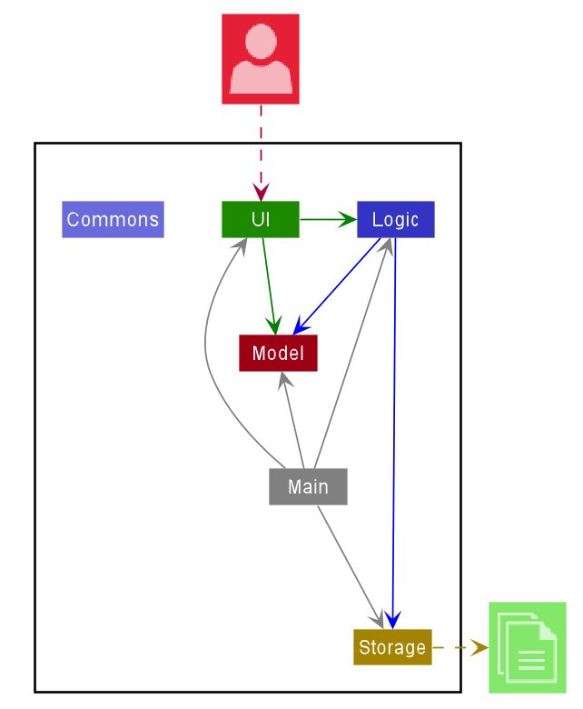

Developer Guide
- Setting up, getting started
- Design
- Implementation
- Documentation, logging, testing, configuration, dev-ops
- Appendix: Requirements
- Appendix: Instructions for manual testing
Setting up, getting started
Refer to the guide Setting up and getting started.
Design
Architecture

The Architecture Diagram given above explains the high-level design of the App. Given below is a quick overview of each component.
.puml files used to create diagrams in this document can be found in the diagrams folder. Refer to the PlantUML Tutorial at se-edu/guides to learn how to create and edit diagrams.
Main has two classes called Main and MainApp. It is responsible for,
- At app launch: Initializes the components in the correct sequence, and connects them up with each other.
- At shut down: Shuts down the components and invokes cleanup methods where necessary.
Commons represents a collection of classes used by multiple other components.
The rest of the App consists of four components.
-
UI: The UI of the App. -
Logic: The command executor. -
Model: Holds the data of the App in memory. -
Storage: Reads data from, and writes data to, the hard disk.
Each of the four components,
- defines its API in an
interfacewith the same name as the Component. - exposes its functionality using a concrete
{Component Name}Managerclass (which implements the corresponding APIinterfacementioned in the previous point.
For example, the Logic component (see the class diagram given below) defines its API in the Logic.java interface and exposes its functionality using the LogicManager.java class which implements the Logic interface.

How the architecture components interact with each other
The Sequence Diagram below shows how the components interact with each other for the scenario where the user issues the command delete 1.

The sections below give more details of each component.
UI component

API :
Ui.java
The UI consists of a MainWindow that is made up of parts e.g.CommandBox, ResultDisplay, TransactionListPanel, StatusBarFooter etc. All these, including the MainWindow, inherit from the abstract UiPart class.
The UI component uses JavaFx UI framework. The layout of these UI parts are defined in matching .fxml files that are in the src/main/resources/view folder. For example, the layout of the MainWindow is specified in MainWindow.fxml
The UI component,
- Executes user commands using the
Logiccomponent. - Listens for changes to
Modeldata so that the UI can be updated with the modified data.
Logic component
API :
Logic.java
-
Logicuses theAddressBookParserclass to parse the user command. - This results in a
Commandobject which is executed by theLogicManager. - The command execution can affect the
Model(e.g. adding a transaction). - The result of the command execution is encapsulated as a
CommandResultobject which is passed back to theUi. - In addition, the
CommandResultobject can also instruct theUito perform certain actions, such as displaying help to the user.
Given below is the Sequence Diagram for interactions within the Logic component for the execute("delete 1") API call.

DeleteCommandParser should end at the destroy marker (X) but due to a limitation of PlantUML, the lifeline reaches the end of diagram.
Model component

API : Model.java
The Model,
- stores a
UserPrefobject that represents the user’s preferences. - stores the address book data.
- exposes an unmodifiable
ObservableList<Transaction>that can be ‘observed’ e.g. the UI can be bound to this list so that the UI automatically updates when the data in the list change. - does not depend on any of the other three components.
Category list in the AddressBook, which Transaction references. This allows AddressBook to only require one Category object per unique Category, instead of each Transaction needing their own Category object.
Storage component

API : Storage.java
The Storage component,
- can save
UserPrefobjects in json format and read it back. - can save the address book data in json format and read it back.
Common classes
Classes used by multiple components are in the seedu.addressbook.commons package.
Implementation
This section describes some noteworthy details on how certain features are implemented.
[Proposed] Undo/redo feature
Proposed Implementation
The proposed undo/redo mechanism is facilitated by VersionedAddressBook. It extends AddressBook with an undo/redo history, stored internally as an addressBookStateList and currentStatePointer. Additionally, it implements the following operations:
-
VersionedAddressBook#commit()— Saves the current address book state in its history. -
VersionedAddressBook#undo()— Restores the previous address book state from its history. -
VersionedAddressBook#redo()— Restores a previously undone address book state from its history.
These operations are exposed in the Model interface as Model#commitAddressBook(), Model#undoAddressBook() and Model#redoAddressBook() respectively.
Given below is an example usage scenario and how the undo/redo mechanism behaves at each step.
Step 1. The user launches the application for the first time. The VersionedAddressBook will be initialized with the initial address book state, and the currentStatePointer pointing to that single address book state.

Step 2. The user executes delete 5 command to delete the 5th transaction in the address book. The delete command calls Model#commitAddressBook(), causing the modified state of the address book after the delete 5 command executes to be saved in the addressBookStateList, and the currentStatePointer is shifted to the newly inserted address book state.

Step 3. The user executes add n/David … to add a new transaction. The add command also calls Model#commitAddressBook(), causing another modified address book state to be saved into the addressBookStateList.

Model#commitAddressBook(), so the address book state will not be saved into the addressBookStateList.
Step 4. The user now decides that adding the transaction was a mistake, and decides to undo that action by executing the undo command. The undo command will call Model#undoAddressBook(), which will shift the currentStatePointer once to the left, pointing it to the previous address book state, and restores the address book to that state.

currentStatePointer is at index 0, pointing to the initial AddressBook state, then there are no previous AddressBook states to restore. The undo command uses Model#canUndoAddressBook() to check if this is the case. If so, it will return an error to the user rather
than attempting to perform the undo.
The following sequence diagram shows how the undo operation works:

UndoCommand should end at the destroy marker (X) but due to a limitation of PlantUML, the lifeline reaches the end of diagram.
The redo command does the opposite — it calls Model#redoAddressBook(), which shifts the currentStatePointer once to the right, pointing to the previously undone state, and restores the address book to that state.
currentStatePointer is at index addressBookStateList.size() - 1, pointing to the latest address book state, then there are no undone AddressBook states to restore. The redo command uses Model#canRedoAddressBook() to check if this is the case. If so, it will return an error to the user rather than attempting to perform the redo.
Step 5. The user then decides to execute the command list. Commands that do not modify the address book, such as list, will usually not call Model#commitAddressBook(), Model#undoAddressBook() or Model#redoAddressBook(). Thus, the addressBookStateList remains unchanged.

Step 6. The user executes clear, which calls Model#commitAddressBook(). Since the currentStatePointer is not pointing at the end of the addressBookStateList, all address book states after the currentStatePointer will be purged. Reason: It no longer makes sense to redo the add n/David … command. This is the behavior that most modern desktop applications follow.

The following activity diagram summarizes what happens when a user executes a new command:

Design consideration:
Aspect: How undo & redo executes
-
Alternative 1 (current choice): Saves the entire address book.
- Pros: Easy to implement.
- Cons: May have performance issues in terms of memory usage.
-
Alternative 2: Individual command knows how to undo/redo by
itself.
- Pros: Will use less memory (e.g. for
delete, just save the transaction being deleted). - Cons: We must ensure that the implementation of each individual command are correct.
- Pros: Will use less memory (e.g. for
{more aspects and alternatives to be added}
[Proposed] Data archiving
{Explain here how the data archiving feature will be implemented}
Documentation, logging, testing, configuration, dev-ops
Appendix: Requirements
Product scope
Target user profile:
- Tertiary student
- Has a need to track everyday expenses/income
- Wishes to cultivate good saving habits
- Prefers desktop apps
- Prefers typing to mouse interactions
Value proposition: Manage finances and cultivate good financial habits (such as saving) efficiently by typing in CLI commands
User stories
Priorities: High (must have) - * * *, Medium (nice to have) - * *, Low (unlikely to have) - *
| Priority | As a … | I want to … | So that I can… |
|---|---|---|---|
* * * |
new user | see usage instructions | refer to instructions when I forget how to use the app |
* * * |
user | add an expense | |
* * * |
user | view a list of past expenses | keep track of my past expenses |
* * * |
user | group expenditure by categories | keep track of what I spend my money on across categories |
* * * |
user | delete an expense | remove expenses that were entered wrongly |
* * * |
user | set a monthly spending limit | track how much I have left to spend for the month |
* * * |
user | add an income | |
* * * |
user | view a list of past income | keep track of my past income |
* * * |
user | delete an income | remove income that was entered wrongly |
* * * |
user | set monthly saving goals | cultivate good saving habits |
* * |
user | view my saving trends | better plan my future expenses |
* |
user | complete savings challenges | be motivated to reach my savings goals |
{More to be added}
Use cases
(For all use cases below, the System is Fine$$e and the Actor is the user, unless specified otherwise)
Use case: Delete an expense
MSS
- User requests to list expenses
- Fine$$e shows a list of expenses
- User requests to delete a specific expense
-
Fine$$e deletes the expense
Use case ends.
Extensions
-
2a. The list is empty.
Use case ends.
-
3a. The given index is invalid.
-
3a1. Fine$$e shows an error message.
Use case resumes at step 2.
-
{More to be added}
Non-Functional Requirements
- Should work on any mainstream OS as long as it has Java
11or above installed. - Should be able to hold up to 1000 expenses/incomes without a noticeable sluggishness in performance for typical usage.
- A user with above average typing speed for regular English text (i.e. not code, not system admin commands) should be able to accomplish most of the tasks faster using commands than using the mouse.
- The data should be stored locally and should be in a human-editable text file.
- The data should not be stored in a Database Management System (DBMS).
- Should not require an installer.
- Should not depend on any remote server.
{More to be added}
Glossary
- Expense: A single transaction that results in a decrease in cash
- Income: A single transaction that results in an increase in cash
- Mainstream OS: Windows, Linux, Unix, OS-X
- Savings: Net gain (positive) or loss (negative) in cash over a set period of time
Appendix: Instructions for manual testing
Given below are instructions to test the app manually.
Launch and shutdown
-
Initial launch
-
Download the jar file and copy into an empty folder
-
Double-click the jar file Expected: Shows the GUI with a set of sample contacts. The window size may not be optimum.
-
-
Saving window preferences
-
Resize the window to an optimum size. Move the window to a different location. Close the window.
-
Re-launch the app by double-clicking the jar file.
Expected: The most recent window size and location is retained.
-
-
{ more test cases … }
Deleting a transaction
-
Deleting a transaction while all transactions are being shown
-
Prerequisites: List all transactions using the
listcommand. Multiple transactions in the list. -
Test case:
delete 1
Expected: First transaction is deleted from the list. Details of the deleted transaction shown in the status message. Timestamp in the status bar is updated. -
Test case:
delete 0
Expected: No transaction is deleted. Error details shown in the status message. Status bar remains the same. -
Other incorrect delete commands to try:
delete,delete x,...(where x is larger than the list size)
Expected: Similar to previous.
-
-
{ more test cases … }
Saving data
-
Dealing with missing/corrupted data files
- {explain how to simulate a missing/corrupted file, and the expected behavior}
-
{ more test cases … }